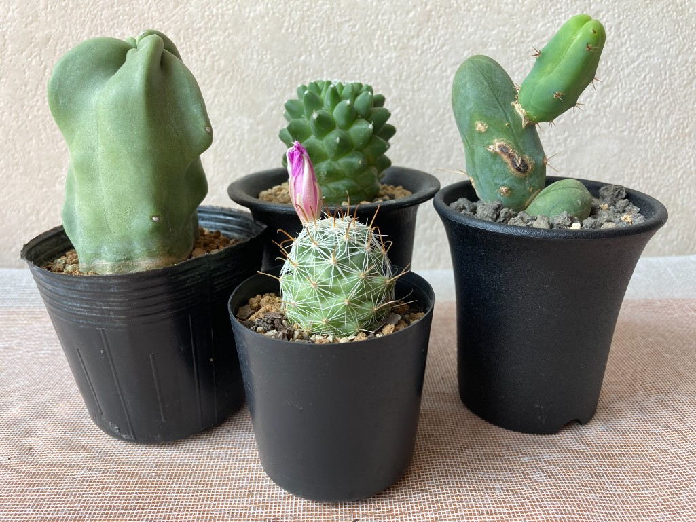

サボテン植え替え大会 YeXuQo

自分が植物をはじめて買ったのは、2019年の8月です。
当時はプログラマとして勤めていた会社を辞めて、転職活動中でした。
またなんとなくプログラマとして働こうかと思っていたのに、いざ選考が進むとだんだん「なんとなく」が保てなくなってきて、そのときに自分は社会インフラでない娯楽寄りの仕事、あまり人間のためでない仕事がしたいんだとわかりました。
そのまま植物関係の仕事に気持ちが向かっていき、今は観葉植物店で働いています。
(はじめは花屋で働こうかと考えましたが、ほぼ人間のための仕事だと思いやめました)
はじめて買った植物はDorstenia Crispaです。
育てやすく種もたくさん採れ、初心者にも育てやすい植物だと思います。
育て始めて最初のシーズンは日照関係ですこし失敗しましたが、原因をひとつづつクリアして今は健康的に育っています。
こうやって植物を育ててみて思ったのは、「とてもシステマティックである」ということです。
彼らは生き物ではありますが、決められたルールに則って反応を示し、成長し、ときに枯れます。
つまり彼らの従うルールを汲み取ってうまくサポートしてあげれば、立派に成長させることができます。
ただし、そのルールはとても複雑なものです。
環境によって細かい要求パラメータは変動しますし、個体によっても差が出ます。人間には100％理解することはできないものです。
先人たちのノウハウを借りつつ、自分の環境で日々試行錯誤しているのですが・・・
自分とは違うルール/価値観を持った存在が自分の家で過ごしていて、彼らが何を必要としているのか汲み取ることが、自分にとってはなかなかに楽しいのです。
最近はどうやら観葉植物がブームらしく、ここ数年で多くの専門店が増えたり、ネットでも買えるようになっています。
自分が植物趣味を始めたときからそのような状況で、なかなか店頭にはない珍しい品種を買うのには助かりました。
ただ、そうしたブームはどうしても消費的な姿勢やビジネスファーストの空気を孕んでいて、内容に違和感を感じるのも事実です。
端的に言えば「栽培と鑑賞のバランス」が取れていない楽しみ方が広まっているように思えるのです。
楽しみ方はそれぞれですし、あまり人の趣味に口出ししたくない気持ちもあります。
でも、もっと素朴な楽しみ方の選択肢があったほうがよいのだと思います。
そして、音楽を作っている人たちは「素朴な楽しみ方」のほうが好きそうだなとも思っています。
(そもそも凝り性な人が多かったり、つくることに関して慮る気持ちを持ち合わせていたり、自分の周りの音楽家のみなさんからはそうした性質を感じるので)
spotifyよりbandcampのほうが好き、という人になら伝わるでしょう。
正直、園芸界に飛び込んでそれで生計を立てようとかは思っていませんが、FOREST LIMITに通うような人たちに向けた小さな園芸活動をしていきたいな、と考え始めたところです。
大 chotto crazy 2020 で植物を育てる楽しみに興味を持ってくれる人がいたらいいな、と思います。